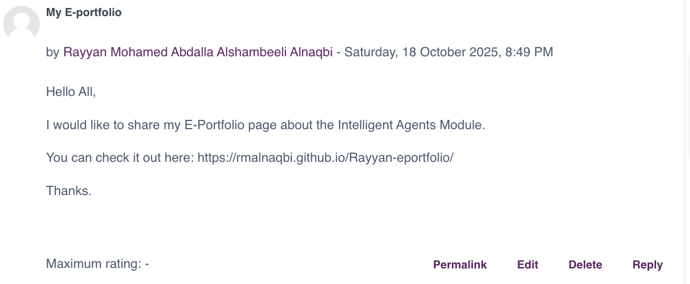
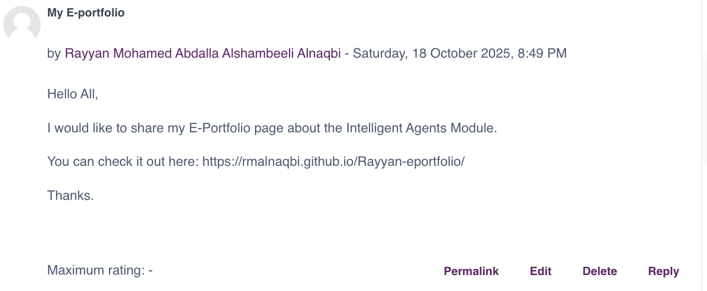

Unit 1 Learning Outcomes:
1. Develop the understanding of key concepts of agent-based computing.
2. Understand the trends that have facilitated the development of agents as a paradigm.
3. Compare different types of agent-based system to contrast their relative merits.
Collaborative discussions bring together diverse perspectives to foster shared understanding, problem-solving, and innovation. By engaging respectfully and constructively, participants enhance critical thinking and work collectively toward common goals:
-
 

I first learned about the fundamentals of agent-based computing in Unit 1, specifically the ideas of social interaction, autonomy, proactivity, and reactivity in agents. Because agents can make decisions and adjust to their surroundings, I now see how they differ from conventional objects. This change in viewpoint made it easier for me to appreciate the benefits of multi-agent systems in resolving intricate, dynamic issues like resource management or simulations. All things considered, the unit provided me with a strong foundation and piqued my curiosity about the useful applications of agents in actual situations.